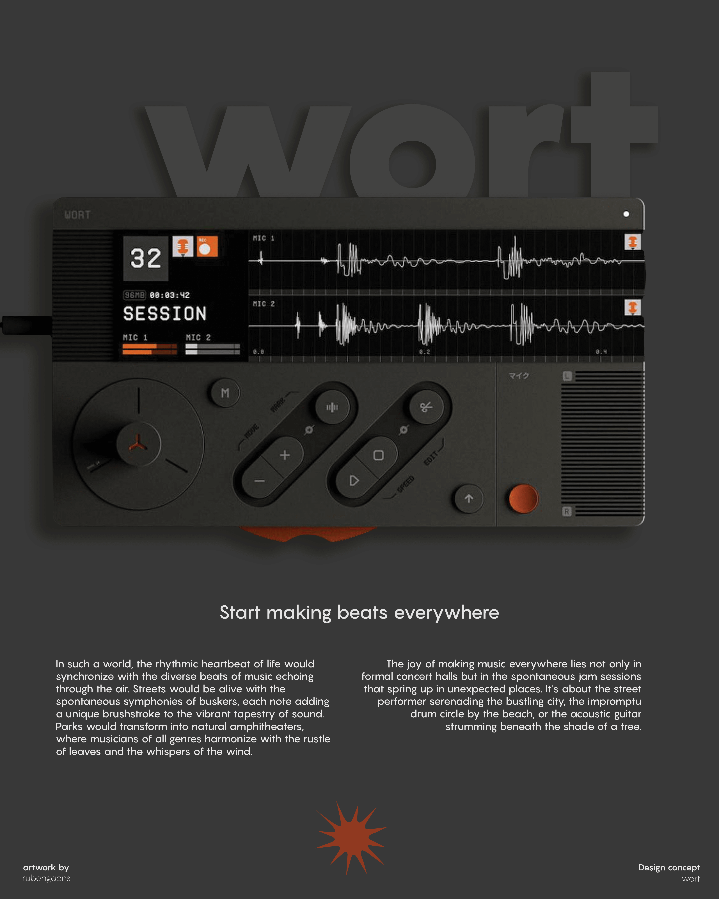
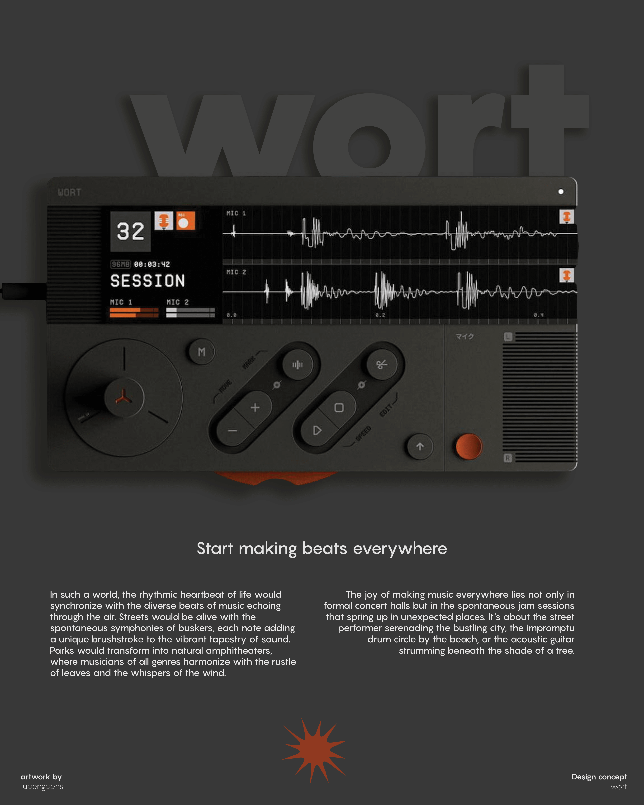

Designs


Introduction
What I find fascinating about creating designs is that there is no set limit. I always want to improve myself and learn from my mistakes by listening to criticism from others. I am open to new things and have a great interest in the design world.
Background
My preference is to work with programmes such as Photoshop, Illustrator and Indesign. Although I am constantly learning, I feel comfortable using these software. Below are some examples of designs I have created.
Designs


 

Own typeface

In my design process, I have been enthusiastically working on creating a custom typeface. This project significantly improved my skills in typography, type design and graphic design.
The Result
My intention was to create a playful typeface with pronounced rounded shapes. My intention was to work with generous curves, creating a lively and dynamic look. I wanted to go for a living look. The use of these expressive shapes in my design is not only an artistic choice, but also a conscious effort to lend a characterful identity to my typographic creation. Below are some examples of the typeface.